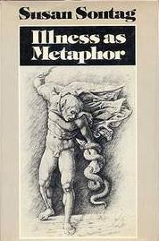

Opinion Piece: Thoughts on “Patient-Centered Care"
Anson Tong
April 2019
One of healthcare’s favorite terms is “patient-centered care,” a departure from the traditional idea of listening and trusting what your doctor says without question. In many aspects, this is great. It accounts for individual preferences, gives the patient a voice to advocate for themselves, raise questions, and take responsibility for their care. In our current model, it’s much more acceptable to seek second or third opinions and have a real dialogue with your doctor before proceeding. We are acknowledging the patient’s role and encouraging engagement.
There are also potential issues with this approach that must be acknowledged and considered so that we can avoid them. Ultimately, the physician knows a lot more and has more experience in this domain, and their advice should carry more weight than other sources. There is a difference between being an active participant in your healthcare and being unnecessarily distrustful or weighing information inaccurately. Some things are medical facts. As the relentless anti-vaccination movement and its numerous measles outbreaks show, there are dangerous consequences to ignoring accepted medical knowledge.
Another issue with this paradigm shift is the fact that an increasing share of the burden is placed on patients regarding their health. The “last mile” of healthcare delivery (e.g. scheduling appointments, actually taking the medication prescribed, etc.) is indeed up to the patient, but as we choose to move our attention and focus squarely on the patient and patient-centered interventions, we neglect broader systemic issues. This ties my thoughts to another one of the healthcare terms of the moment, “social determinants of health.” A patient would almost certainly struggle to self-advocate and follow a doctor’s instructions if they are facing profound financial strain, the stress and sometimes even cultural stigma of being ill, etc. Why hasn’t transparency about cost or physician conflicts of interest been integrated in patient-centered care? What about considerations regarding the trade-off between patient satisfaction and physician burnout? Working to improve quality of care requires the cooperation of patients, physicians, entire health systems, insurers, pharmaceutical companies, and policymakers. If we allow any player to go unscrutinized and unsupported, the disparities in healthcare will only continue to widen.
Working with HER: Houston Empowering Refugees
Jean Choi
March 2019
Recently, I started volunteering with Houston Empowering Refugees, which is a project focusing on empowering Afghan refugee women and educating them about health resources in Houston. Compared to other refugee populations, Afghani women experience a higher rate of domestic abuse and much of this is ignored due to the fact that refugee women do not know of the resources they can utilize. Through Houston Empowering Refugees, we hold weekly health education classes revolving around a variety of different topics such as child nutrition, birth control, and different forms of exercise.
Through this experience, I have seen how excited the refugee women are to learn more about health resources and integrating further into the Houston community. This experience has also taught me that health disparities exist almost everywhere, and it is important to take initiative to combat these by helping these underserved populations through different platforms.
MedHum Recommends: Illness as Metaphor
Naimah Sarwar
February 2019
In her work, Illness as Metaphor, Susan Sontag contrasts the social metaphors associated with tuberculosis and those associated with cancer. Tuberculosis was the disease of the poets and artists. It romanticized the frailty and gaunt appearance that was a result of the disease’s symptoms and was associated with passion, youth and the elite. Cancer, on the other hand, was characterized as this demonic or alien force that took over the body. It was characterized with growth or a cancerous “pregnancy” of sorts that was difficult to aestheticize.
While tuberculosis was associated with the passion and a heightened experience of the worldly, cancer was associated with the limitation of the appreciation of worldly life. Sontag also explores the connections of cancer as a metaphor with roots in the political and social climate. She outlines the militaristic nature of cancer treatment as a kind of guerilla warfare. The aggressive nature of the disease led to the cancer metaphor’s translation into twentieth century politics in particular. Political turmoil and even genocides have been attributed to rhetoric labelling the “other” as a cancer in need of eradication.
Sontag’s exploration of metaphors goes beyond exploration of an illness. What does it mean to be ill? Why don’t we perceive all illnesses equally? Why do place different expectations on patients with different illnesses? Illness as Metaphor reflects on these questions and how the evolution of their answers tells us something meaningful about society at large. It’s a short yet fascinating read that grants a fresh perspective on medicine and illness.
Sontag, S. (1978). Illness as metaphor. New York: Farrar, Straus and Giroux.
|  |
“Illness is the night side of life, a more onerous citizenship. Everyone who is born holds dual citizenship, in the kingdom of the well and in the kingdom of the sick. Although we all prefer to use the good passport, sooner or later each of us is obliged, at least for a spell, to identify ourselves as citizens of that other place.”
― Susan Sontag, Illness as Metaphor
Objectivity & Anatomy
Bilal Rehman
February 2019

I recently worked on a project with Dr. John Mulligan that involved photographing anatomy
atlases from the 16th and 17th centuries. The artistic developments of the Renaissance
interplayed in a complex way with the drive for scientific objectivity in depictions of the body.
The first image [above], from the early 16th century (da Carpi), is two-dimensional and lacking in
detail. The figure depicted reveals his own body to the viewer.

The second image (early 17th century, Cesare) strikes a sort of balance between the first and
third images — the baby still seems to be self-revealing, and both the artistic and scientific
quality of the depiction is much better than that of the da Carpi drawing.

The third image, from the late 17th century (Bidloo), is the most apparently scientific. The head
is seen on the dissecting table, and page by page throughout the atlas, Bidloo depicts the peeling
back of each layer of the body. Images in anatomy textbooks most resemble the third image,
though depictions of the body today are abstracted from any artistic or physical form in the hopes
of structural clarity.
© 2016 Rice Medical Humanities Club ||
Join the Listserv ||
Report a Site Issue